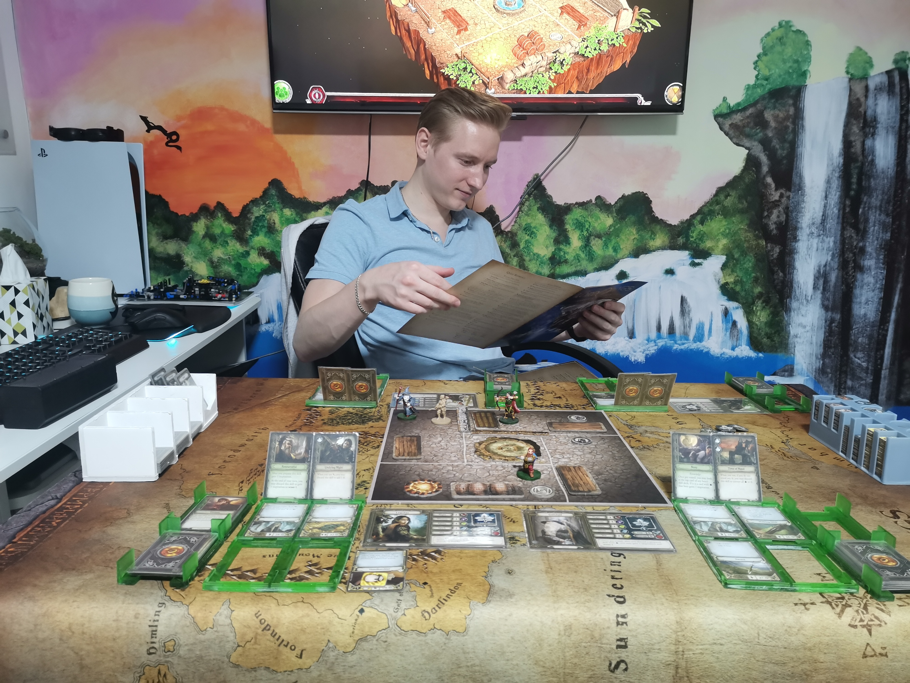

My Hobbies
Karate

Karate has been the cornerstone of my life since I was six years old, shaping not just my physical abilities but my entire worldview. My dedication to this martial art has led to remarkable achievements, including becoming the FSKA world champion in kumite for the under-25 category in 2017-2018, and earlier claiming three WTKA world titles in kumite, kata, and team kumite in the 10-12 age group during 2009-2010. Beyond the competitions and accolades, karate represents my deepest passion—a discipline that has taught me respect, perseverance, and a profound appreciation for Japanese culture and the martial arts philosophy.
Travelling

Exploring the world and immersing myself in diverse cultures has become an integral part of who I am. Having visited over 30 countries throughout my life, my most transformative journey was a five-month backpacking adventure across Asia, where I explored ten different countries. This extended trip wasn't just about seeing new places; it was about truly experiencing how different people live, think, and celebrate life. From bustling street markets to countryside villages, each destination offered unforgettable lessons and perspectives that have fundamentally broadened my understanding of the world.
Seeking Adrenaline

I've always been drawn to activities that get my heart racing and push me outside my comfort zone. From skydiving and bungee jumping to cage diving with sharks, these adrenaline-pumping experiences have taught me something valuable: the most memorable moments in life usually happen when you take the leap despite the fear. Each time I've conquered one of these challenges, I've walked away feeling a bit braver and more confident, carrying that mindset into other areas of my life. There's something incredibly rewarding about facing down your fears and coming out the other side stronger for it.
Surfing

Surfing has become an essential part of my life, offering a unique balance of challenge and tranquility. There's something compelling about reading the ocean's rhythm, timing the approach, and catching a wave for those brief moments of complete immersion. Beyond the physical challenge, I find the experience remarkably centering—time spent in the water provides a natural break from daily pressures and offers a space for mental clarity. Each session delivers both a sense of accomplishment and genuine relaxation, making it one of the most rewarding ways I spend my time outside of work.
Board Games
In quieter moments away from physical pursuits, I enjoy the strategic depth of cooperative board games, particularly titles like Journeys in Middle-earth and Gloomhaven. These games offer complex mechanics and immersive narratives that unfold over extended play sessions, requiring careful tactical planning and collaborative problem-solving. What I find most engaging is the team-based approach, where players must coordinate strategies and make critical decisions together to overcome challenging scenarios. Working through these intricate game systems with friends provides a satisfying mental exercise and reinforces the value of effective collaboration—skills that translate well beyond the gaming table.